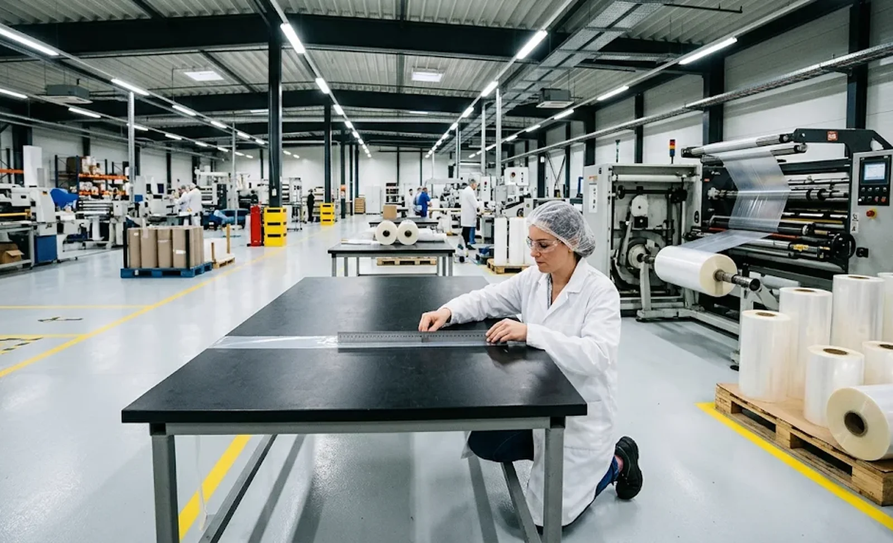
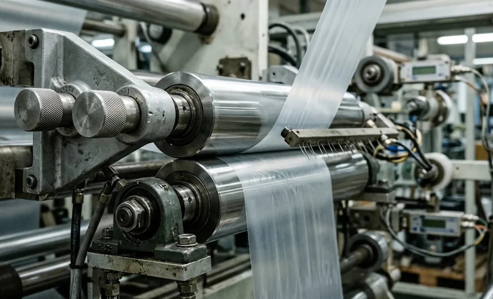

Published November 9, 2026 | By HDPTH Technical Editorial Team

Of all the defects a slitter rewinder can produce, curl has the most delayed arrival. Wrinkles, gauging bands and telescoping are visible during winding or roll inspection; curl waits until the roll is unwound at the customer’s converting step, hours or weeks later. By then the web has been transported and conditioned, and the blame begins: converter, roll producer and machine builder each point elsewhere. The engineering truth is that curl is a shared outcome — wound-in stress from the rewinding process, plus memory stored in the material itself. A buyer who understands which part of the curl comes from the machine can specify and test that part, and negotiate the rest from data instead of opinion.
What curl is and where it shows up
Curl is a permanent curvature of the slit web toward one face, usually measured as the lift of a cut length over a flat table. It takes three familiar forms. Radial curl is the classic: the web bows in the machine direction, toward the outside of the roll for over-stressed films and papers, because the outer layers were wound under tension beyond their elastic response and the strain relaxes into curvature when released. Edge curl affects the cross direction and appears on one or both slit edges, typically where the roll has absorbed or lost moisture unevenly, or where the edge region was over-nipped during winding. Curl toward the core region shows up as the first metres of a roll refusing to run flat, reflecting the highest local stress and nip pressure near the core. Downstream the consequences are practical: label stock misfeeds dispensers, film laminates fight the printer feeder, medical packaging webs refuse to lie flat on forming tools. None of these problems existed as an alarm on the rewinding machine — which is why they belong in the specification, not after delivery.
Winding stress: the primary machine-side cause
The rewinding process stores elastic strain in the roll, and the amount depends on three interacting variables. First is winding tension itself: every layer is stretched onto the stack, and when tension per unit width approaches a meaningful fraction of the material’s stiffness, the strain becomes effectively locked in — thinner, stiffer and lower-elongation materials lock in more curl per newton of tension. Second is nip pressure: the lay-on roll that densifies the roll also presses each layer onto the previous one, and excessive or uneven nip converts tension into a permanent hardness gradient, dense at the outer surface and progressively softer inward, which biases relaxation unevenly. Third is the tension profile through the roll: a flat profile that is correct at the core is excessive at full diameter, so the outer layers carry the highest stored strain of the whole roll. The fix is well understood — taper tension that steps the setpoint down as diameter grows, calibrated nip load rather than guessed nip load, and tension measurement that reflects the web rather than the roll surface. What buyers overlook is that these three settings belong in the acceptance protocol individually, because each can be correct on paper and mistuned in practice.
Material memory: moisture, temperature and laminate asymmetry
A significant share of curl is stored in the material before the machine ever sees it, and a buyer who ignores this will over-specify the machine and under-address the cause. Paper and paper-based laminates are hygroscopic: fibres swell across their width when they absorb moisture, so a one-sided moisture difference — one face exposed to humid air during storage, or adhesive carrying water — makes the web curl toward the drier face. Temperature does the same through differential shrinkage: oriented films shrink at their own rate, so a laminate of two films with different shrinkage onset temperatures curls when it passes through any heat history after slitting. Asymmetric construction is the structural version of the same effect: a film–foil or film–paper laminate has two faces with different stiffness and different hygroscopic behaviour, and it will curl toward the stiffer face under almost any moisture or temperature gradient. The machine’s contribution can be measured and minimised, but the material’s contribution has to be managed on the material side — moisture-conditioned storage, symmetric lamination, balanced drying. Ask suppliers to quantify the machine’s share during the material trial, so the acceptance criteria reflect what the rewinding process actually controls.
Decurling equipment and conditioning practice
When the downstream process demands a genuinely flat web, winding settings alone are not always enough, and decurling hardware earns its place in the quotation. A decurler is a biasing nip on the rewind section: the web passes over an adjustable roller or through an adjustable wrap that applies a controlled reverse bend, countering the web’s tendency to curl. The essential requirements are adjustability across the width and during operation, repeatability from roll to roll, and settings that live in the machine recipe. Placement matters: a decurler on the web just before rewind corrects incoming curl from the unwind side as well as wound-in curl, while designs that bias the wound roll directly act only on what has already been stored. Conditioning is the non-hardware half of the practice: rolls that leave the machine flat can curl in the warehouse, so storage temperature, humidity and the time between winding and use belong in the buyer’s internal specification. At the FAT, ask the supplier to demonstrate the decurler’s working range on your material — a decurler already at the end of its adjustment on day one is a specification failure, not a tuning problem.

Specifying and testing flatness at acceptance
Flatness is testable, but only if the test is defined before the order. The core measurement is the chord test: a length of slit web is laid on a flat table and the maximum rise is measured over a stated span — 10 millimetres over a 300 millimetre chord is a workable starting point for films and laminates, and nonwoven webs typically accept a slightly larger figure. Four clauses turn that measurement into an enforceable specification. First, the material clause: acceptance is measured on the buyer’s own substrate, wound at production speed and production roll diameter, because flatness on a supplier’s demo material proves nothing. Second, the conditioning clause: samples are measured after a fixed conditioning time — 24 hours is standard — so the test captures relaxation rather than the transient state at unwind. Third, the sampling clause: chord measurements are taken from the start, middle and end of a full production roll, because curl is not uniform through the diameter. Fourth, the documentation clause: recorded measurements belong in the FAT report as data, with the decurler and tension settings noted alongside them, so any later curl investigation starts from facts. Machines that meet a chord specification defined this way deliver rolls the customer can run flat — buyers who skip the clause deliver the argument instead.
Two related guides deepen this picture: the Slitter Rewinder Taper Tension Profile: Buyer’s Guide explains how stepping the tension setpoint down through the roll reduces the stored strain that becomes curl, and the Load Cell vs Dancer Tension Control for Slitter Rewinders covers how each tension measurement method affects the accuracy of the winding stress you are trying to control. To see these controls applied across a machine range, review the HDPTH high-speed slitting machines series.
Need Rolls That Stay Flat on Your Customer’s Line?
Send HDPTH your material, roll diameter and flatness targets. Our application engineers will propose the tension profile, nip calibration and decurling configuration we would build into the machine — and verify web flatness with a chord test in the FAT protocol before the order is placed.
Submit Your Project InquiryFrequently asked questions
What causes curl in slit rolls?
Curl comes from residual stresses locked into the roll during winding: wound-in tension beyond the material’s elastic response, nip pressure and a hardness gradient from core to outside leave stored strain, which relaxes as curvature when the roll is cut and unwound. Moisture gradients, thermal effects and asymmetric laminate construction amplify the same behaviour.
Can curl be fixed by rewinding under different tension?
Partly. Lowering peak winding stress and applying a correct taper tension profile usually reduces curl noticeably, because the machine stops forcing elastic strain into the outer layers. For hygroscopic materials and asymmetric laminates, though, much of the curl originates in the material itself, which is why flatness acceptance should be trialled on the buyer’s actual substrate.
What is a decurler and when is it needed?
A decurler is a biasing nip — usually an adjustable roller arrangement on the rewind section — that passes the web through a controlled reverse bend to counteract curl. It is specified when downstream processes demand flatness: label stock feeding dispensers, film laminates for printing, medical packaging webs and wipes. A good decurler is adjustable across the width and during operation, with settings that are repeatable and recorded in the machine recipe.
How is web flatness tested at the factory acceptance test?
The standard method is the chord test: lay a length of slit web on a flat table and measure the maximum rise over a stated span — for example 10 millimetres or less over a 300 millimetre chord — after 24 hours of conditioning. Samples come from the start, middle and end of a production roll wound at production speed on the buyer’s own material, and the recorded data belong in the FAT documentation package.
Should curl acceptance be specified for my material?
Yes. Curl is material-dependent, so a generic flatness figure proves nothing about your product. Define the acceptance test in the requirement specification — chord height, roll diameter, winding speed and conditioning time — measured on your own substrate, and require a material trial before the machine is built. The trial, not the brochure, decides the specification.